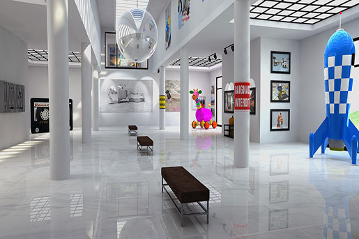
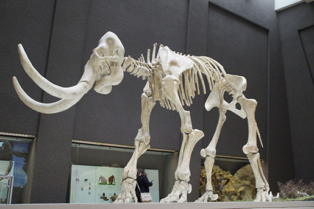

Our Exhibitions
We believe science should not be confined to the textbook, but brought to life through exhibits. This is why we have over
1000 different exhibits on the many varied subjects of science to explore.
Many of these exhibits are designed for you to interact with and play around to see science come to life (apart from the
dinosaur exhibits – they only come to life at night when everyone’s gone home...).
Accessibility at the Museum
Science should also be accessible to everyone, so we strive to make our museum and all of our exhibitions as accessible
as possible. We want everyone to feel welcome and taken care of while visiting us.
Read more about how the museum works with accessibility here.

Where there is possible there is good space to get around with strollers and wheelchairs.
Cosmology - "The Sky Above Us"
Explore the wonders of our cosmos. Our fantastic exhibition, "The Sky Above Us", explores the night sky
and what we can see and know about the universe around us. We’ll locate the various constellations and galaxies that can be seen and learn
a bit about the early navigators who used the stars to travel by.
Follow the journey of our solar exploration: from early Arab traders, to Galileo’s telescope, to the latest exploration of the planets in
our solar system.
"The Sky is Above Us" - an exhibition about the galaxy and its planets.
Biology and Medicine - "Building Blocks of Life"
From micro-organisms to the human body, major breakthroughs in biology are offering us unique insights into the great wonders of the tiny
world.
For many people their life expectancy is much longer and their quality of life much improved, thanks to the growth of our understanding of
medicine. Over a series of exhibits we explore the history of medicine and take a look at some major breakthroughs
including the discovery of penicillin and the first heart transplant.
Many of our great medicinal discoveries have come not only from the lab, but also from observing animals in the wild. Often our fellow
creatures have beat us to it.
"Building blocks of Life" - an exhibition about the history of medicine.
Robotics and AI - "Shake hands with Rob the Robot"
The information revolution is here and robotics and artificial intelligence are the science of the future. From useful home applications
of AI to industrial uses of robotics, the future is here.
You can even say hello and shake the hand of Rob the Robot.
Shake hands with Rob the Robot.

Evolution - "Meet Woolly Mammoth"
For centuries, philosophers and scientists have wrestled with the question of our origins. Where do we come from and how did we get here?
Since Darwin proposed his theory of evolution we have had a framework for exploring and understanding our place in this
world.
Discover the origins of life on this planet and how the species we know today have evolved over time. You can also take some time to meet
a few of the creatures who didn’t survive, including our Woolly Mammoth, the Dodos, and a number of dinosaurs too.

When the Dinosaurs Roamed the Earth
One of our most popular exhibitions are "When the Dinosaurs Roamed the Earth".
This exhibition have real-size dinosaur skeletons to really show off how big the dinosaurs where (and how small we humans
are...).
We have real-size dinosaur skeletons.
Ecology - "Make Our Future Greener"
As we learn more and more of the impact humans are having on the planet, the more important it becomes that scientists explore how to
create a sustainable future not just for humans but for the whole planet.
In our ecology section of the museum, we unpack the dangers we currently face including
global warming, extinction of species, and pollution. But we also focus on the positive ways we can all
contribute to a brighter future.
"Make Our Future Greener" - an exhibition about the Earth's (and our) future.